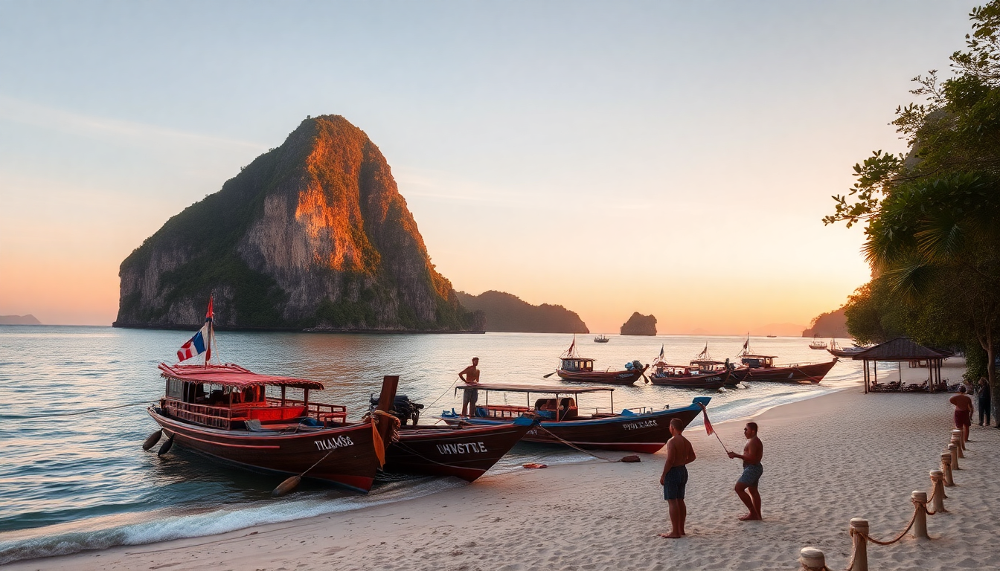

Best Beaches in Thailand – Phuket, Krabi, Koh Samui

I spent three weeks island-hopping through southern Thailand, and the biggest surprise was how different each beach actually is. Patong is a circus. Railay is a climbing gym with sand. And the best beach I found? Not the one on any "top 10" list. Here’s what I learned, beach by beach, so you don’t waste your days on a sunbed next to a jet-ski exhaust pipe.
What are the best beaches in Phuket?
Phuket has 30+ beaches, but most are either packed with package tourists or too rocky to swim. I narrowed it down to three that actually deliver.
- Kata Beach – calm, clean, and family-friendly. The south end has decent snorkeling when the tide is high. We stayed at Kata Beach Resort and walked straight onto the sand.
- Karon Beach – longer and less crowded than Patong, with a wide shoreline. The water can get a bit rough in the afternoon, but it’s great for bodyboarding. Try lunch at The Pad Thai Shop on the main road.
- Freedom Beach – accessible only by longtail boat from Patong or a steep jungle trail. It’s quieter, but the coral is mostly dead. Worth a half-day trip if you want to escape the crowds.
Skip Patong Beach unless you want to people-watch and buy cheap sunglasses. The sand is fine, but the water is murky and the jet-skis don’t stop.
What are the best beaches in Krabi?
Krabi’s beaches are more about drama — limestone cliffs, turquoise water, and a laid-back vibe that Phuket lost years ago. The anchor is Ao Nang, but the real gems are a short boat ride away.
- Railay Beach – the poster child of Krabi. You can only get here by boat. The west side has soft sand and clear water; the east side is a mangrove swamp. We booked a half-day rock-climbing trip with King’s Climbers and it was the highlight of our trip.
- Phra Nang Beach – a five-minute walk from Railay East. It’s smaller, but the water is calmer and the limestone backdrop is stunning. There’s a cave shrine filled with wooden phalluses — weird, but worth a look.
- Tonsai Beach – between Railay and Phra Nang. It’s rockier and attracts backpackers and climbers. The vibe is scrappy, but the sunsets are excellent.
Stay at Railay Bay Resort if you want convenience, or Bhu Nga Thani Resort in Ao Nang for a quieter base with a pool.
What are the best beaches in Koh Samui?
Koh Samui is the most developed of the three islands, but it still has pockets of quiet sand if you know where to look. The east coast gets the best sunrises; the north coast has the calmest water.
- Chaweng Beach – the longest and busiest. The north end is quieter; the south end is where the parties are. We stayed at The Library (yes, the one with the red pool) and loved the location. For dinner, walk to The Jungle Club for views over the bay.
- Lamai Beach – less crowded than Chaweng, with better value hotels. The water is clear, and the beach is wide. Try Sabeinglae Restaurant for authentic southern Thai curry.
- Silver Beach – a tiny cove between Chaweng and Lamai. It’s sheltered, shallow, and great for snorkeling. We spent an afternoon here with just a dozen other people.
Skip Bophut Beach unless you’re there for the Fisherman’s Village walking street on Friday. The sand is mediocre and the water is shallow.
When is the best time to visit these beaches?
Timing matters more in Thailand than most people realize. The monsoon patterns are different on each coast, so you can’t just pick “dry season” and call it done.
- Phuket (west coast) – best from November to April. May to October is rainy and the sea gets rough. We visited in March and had blue skies every day.
- Krabi (west coast) – same window as Phuket. November to April is ideal. The rain starts in May but often comes in short bursts.
- Koh Samui (gulf coast) – opposite schedule. Best from December to August. September to November is the wettest period. We went in February and it was perfect.
If you’re island-hopping, aim for January or February. Both coasts are generally good then.
How do I get between these islands?
Ferries and minivans connect everything, but the quality varies wildly. Here’s what worked for us.
- Phuket to Krabi – we took the Raja Ferry from Phuket’s Rassada Pier to Ao Nang. It took about 2 hours and cost 400 baht. The boat was clean and had AC.
- Krabi to Koh Samui – this is a longer trip. We booked a combined bus-ferry ticket through Lomprayah. Total time was about 4.5 hours including the bus transfer through Surat Thani. It’s not the most comfortable ride, but it’s the most reliable.
- Koh Samui to Phuket – we flew. Bangkok Airways has a direct flight from Samui to Phuket that takes about an hour. It costs more than the ferry, but it saves a full day of travel.
Book ferry tickets through your hotel or a reputable agent in town. Don’t buy from touts on the street.
Which beach is best for families?
If you’re traveling with kids, calm water and easy access matter more than nightlife or Instagram views.
- Kata Beach (Phuket) – gentle waves, lifeguards, and plenty of shaded spots. The sand is soft and the slope is gradual.
- Phra Nang Beach (Krabi) – shallow water and a protected bay. The walk from Railay East is short and flat.
- Silver Beach (Koh Samui) – tiny, sheltered, and almost no current. Kids can snorkel right off the beach.
We took our nephew to Kata and he spent three hours building sandcastles and chasing crabs. No drama, no complaints.
FAQ
Which beach in Thailand has the clearest water? Phra Nang Beach in Krabi and Silver Beach in Koh Samui both have exceptionally clear water, especially in the morning before the boats arrive. Railay West is also good, but it gets stirred up by longtails after 10 AM.
Are the beaches in Phuket too crowded? Patong is a zoo. Kata and Karon are manageable, even in high season. Freedom Beach is quiet because it’s harder to reach. If you want empty sand, head to the less-developed north end of Karon or take a day trip to the Similan Islands.
Can I swim at all these beaches year-round? No. From November to April, the west-coast beaches (Phuket, Krabi) are calm and swimmable. From May to October, the Gulf beaches (Koh Samui) are better. Always check the flag system — red flags mean strong currents, and drowning is a real risk.
Conclusion
- Kata Beach in Phuket is the best all-rounder for families and casual swimmers.
- Railay Beach and Phra Nang in Krabi are worth the boat ride for the scenery alone.
- Silver Beach in Koh Samui is the hidden gem — tiny, quiet, and perfect for a lazy afternoon.
- Visit November to April for Phuket and Krabi; December to August for Koh Samui.
- Skip Patong, Bophut, and any beach with jet-skis parked on the sand.